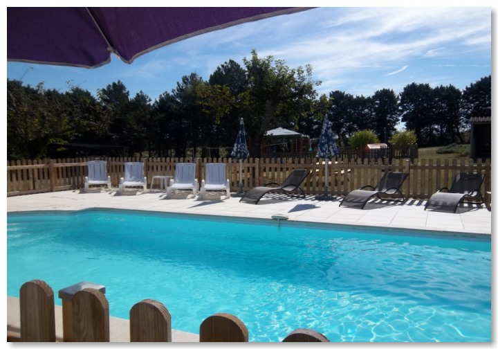
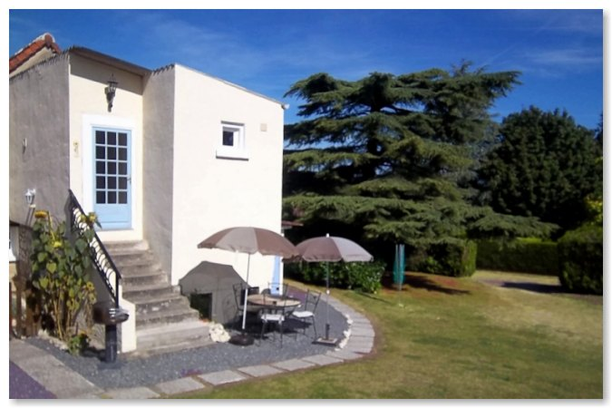

|
Un peu au sud de la vallée de la Loire, à mi-chemin entre Paris et Bordeaux, dans la région populaire et charmante de Poitou-Charentes, se niche la ville pittoresque et historique de La Roche-Posay. |
|
Situé sur un espace tranquille avec une grande piscine privée, Cherry Lodge est la retraite idéale dans ce paysage pittoresque, et fait une base excellente de laquelle on peut explorer cette région charmante de la France. C'est aussi l'endroit parfait pour s'échapper dans ces environs vivifiants. |
 |
|  |
La ville ÈlÈgante et historique de La Roche-Posay, grouillante de restaurants et de cafÈs est cÈlËbre pour ses thermes et ses Ètablissements de cures qui utilisent les qualit√©s exceptionnelles des eaux de source naturelle pour leurs maladies de la peau ou apr√®s un traitement pour le cancer. Cette destination de vacances varie√©s dispose m√™me de son propre casino et d'un hippodrome offrant six rendez-vous par an. |
BIENVENUE ¿ CHERRY LODGE |
 
|
Un peu au sud de la vallée de la Loire, à mi-chemin entre Paris et Bordeaux, dans la région populaire et charmante de Poitou-Charentes, se niche la ville pittoresque et historique de La Roche-Posay.
Les appartements de "Cherry Lodge", c'est-‡-dire Les Lauriers (‡ une chambre, de 1 √ 4 couchages), La Lavande (‡ une chambre, de 1 √ 4 couchages), Les Tournesols (‡ deux chambres, de 1 √ 5 couchages) and Les Vignes (‡ deux chambres, de 1 √ 5 couchages), font partie d'une maison de ferme et ses Ècuries anciennes qui datent de 1800.
D'accès facile de la côte de l'ouest et La Rochelle, La Roche-Posay est située à seulement 45 minutes en voiture (ou service d'autobus) de la cité célèbre de Poitiers.
Nous avons rénové avec soin ces bâtiments et nous avons gardé les caractéristiques originales telles que les poutres de chêne et les volets. Mais ils offrent naturellement tout le confort d'une habitation moderne.
Etc...